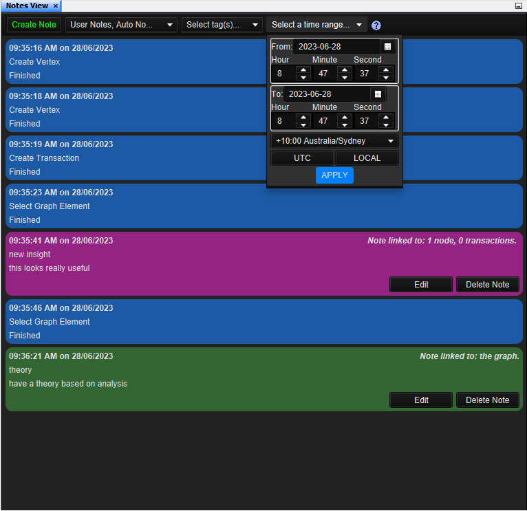
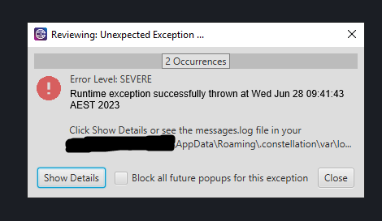
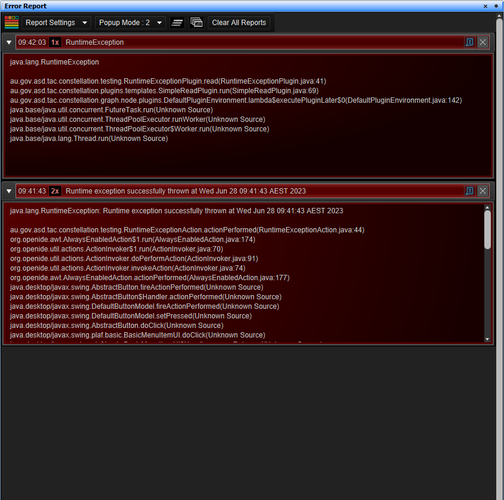
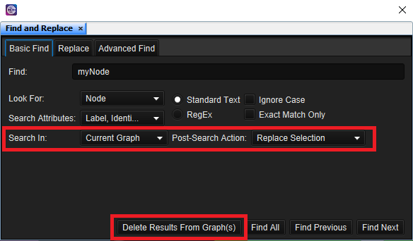
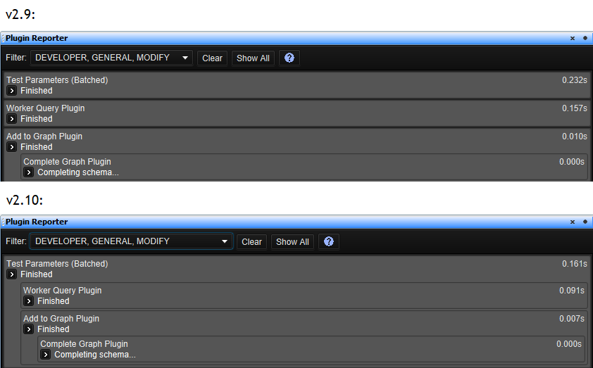

What's new in Constellation v2.10
Here is a list of changes we've added to this version of Constellation v2.10 which are also included in Constellation Cyber v1.9.
New Features and Improvements to Notes View
Notes View has been updated with new features and a new look!
Firstly, you can now customise the colour of your user notes. This will allow you to distinguish different notes for different situations. Different colours could be used for different parts of your graph, different stages in your analysis, or perhaps different kinds of notes (e.g. general remarks, notes for future, questions to answer)
Secondly, a datetime filter has been added. This gives you another way to filter notes by only displaying notes that were created during a selected time frame.
Lastly, the Notes View interface has been updated to optimise the way notes are displayed. This has been primarily achieved by moving the section to create new notes into a dialog box which pops up when you click the Create Note button. Also for notes that are more than five lines long, notes are contracted with a show more button to expand the note (and a show less button to contract again). These together allow more space to view more notes with less scrolling required.
New Error Report View
Previously in Constellation, an error would pop up any time something went wrong. In some instances though, this could result in multiple pops up being displayed at the same time which could be a pain to remove and potentially slow down your computer.
Introducing the Error Report View: a view to help better manage how errors are displayed in Constellation. It can be accessed via Help -> Error Report. In the view, you choose which level of errors you want to popup as well as display reports for. Errors which occur more than once will display a count alongside the existing error rather than displaying a popup for each instance which will significantly decrease the number of errors displayed. You also have the option to stop displaying specific errors when they pop up altogether if you so desire. Altogether, the view should make for a better experience when errors occur.
 New Find View Dropdowns Improved
The Current Selection dropdown in the new Find View was a little confusing. Some options suggested what to do for the search itself while others pointed to actions that occur after the search. To remove this confusion, we’ve replaced the Current Selection dropdown with two dropdowns: Search In, and Post-Search Action.
With the Search In dropdown, you can choose the scope of your search with options of either the current graph, current selection, or all open graphs (which has moved from its previous location as a checkbox at the bottom of the view).
The Post-Search Action dropdown allows you to determine what to do with the results after the search has completed with options to either replace, add to, or remove from the current selection. To compliment this dropdown, there is also now a button at the bottom of the view to delete the results from the graph (or graphs if searching all open ones).
Plugin Reporter now displays Child Plugins
Some plugins in Constellation are made up of several child plugins which will execute in sequence. Previously though, these plugins would display the main parent plugin and its status on its own in the Plugin Reporter. This meant that if the plugin failed, there was no way of telling from the Plugin Reporter which child plugin the error occurred in (as it would simply tell you the parent plugin had failed). The child plugins would have a report displayed as well, but they were presented on the same level as the parent and so there was no apparent connection between parent and child.
This has changed now in v2.10 with the reports for child plugins being displayed under the parent plugin that it was executed under. This means you can now see how long each individual child plugin takes to run and should any errors occur during execution, you will know exactly which plugin caused the error to occur.
JPG and GIF now supported as Icon Types
Alongside PNG, you can now select JPG and GIF images to be icons for nodes on your graph.
Several Bug Fixes
A number of bug fixes have also been made. These include:
- The Excel datetime formatter is now working again
- Some data access view plugins which were auto selected by default when launching the view are no longer doing so
- Recent graphs on the Welcome Page are no longer occasionally missing
Want to know more?
You can find out more information about the latest updates on the What's new page once you have installed version 2.10. There's loads of extra details available in the Release Notes and Change Log.
Would you like to learn more about how Constellation works?
There is a training package available on GitHub to learn how to make the most use of the various features in Constellation. There is also developer training for those seeking to deep dive into the underlying source code.
Contact Us
Do you have any feedback or suggestions for improvement? Noticed a bug? You can log an issue via the Help menu or clicking here.